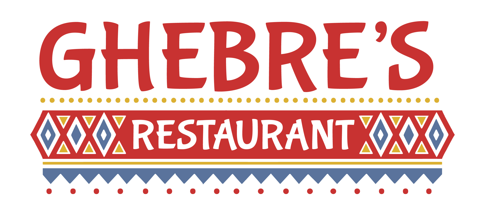

Theme Choice: Foodhunt
Logo:

Theme Design Notes:
- Insert theme design notes here.
Color Scheme:
Blue
#59729B
#59729B
Mustard
#DBAF31
#DBAF31
Red
#C6342F
#C6342F
White
#FFFFFF
#FFFFFF
Fonts:
- Insert fonts here.
Technical Notes:
- Easy to use
- Ability to add images
- Ability to add prices and descriptions
- Can not change layout/format
- No online ordering
- Clean design
- Easy to use and modify
- Very basic
- Limited customization options No images
- No online ordering
- Online ordering and payment processing
- Easy to use and modify
- Customizable layout
- Unattractive design
- Limited customization options
- Improved SEO over WordPress platform
- Social Integration with Facebook OpenGraph
- Advanced XML Site Maps
- Free
- Plain design
- May require some know-how to fully be utilized by client.
- Can create multiple columns for menus.
- The grid option allows for great/prominent use of pictures.
- Easy to use and change, which is good for the client.
- Shows prices.
- A little boring and plain if column menus are used.
- Can't order online with it.
- Integrates Google Reviews with the website to help boost ratings.
- Can be used as a side menu that updates as reviews are placed on Google.
- Free
- Free version only allows 3 reviews at a time.
- Excellent security plugin
- Helps keeps site clean of garbage and malware
- Free version which works well enough for most applications
- Paid version is expensive
Plug-ins
Restaurant Menu by MotoPress
- Pros:
- Cons:
Foodlist
- Pros:
- Cons:
wMenu
- Pros:
- Cons:
Yoast SEO
- Pros:
- Cons:
RestaurantPress
- Pros:
- Cons:
Google Places Reviews
- Pros:
- Cons:
WordFence Security
- Pros:
- Cons: